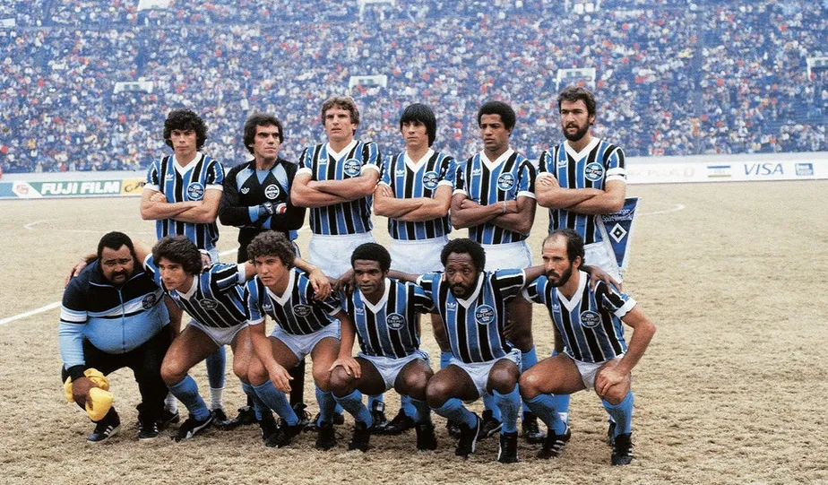
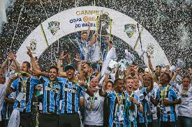
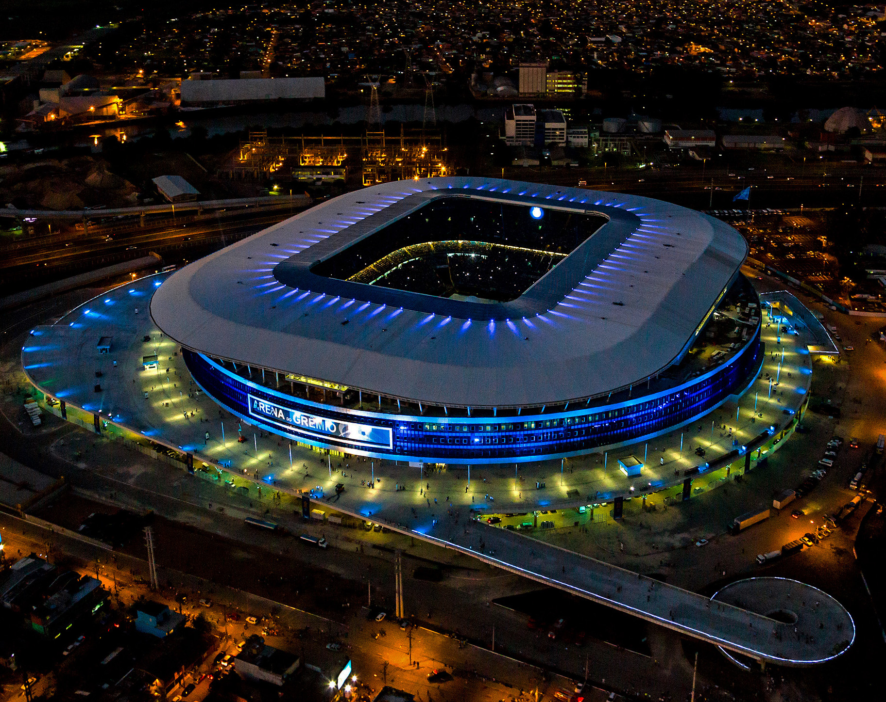
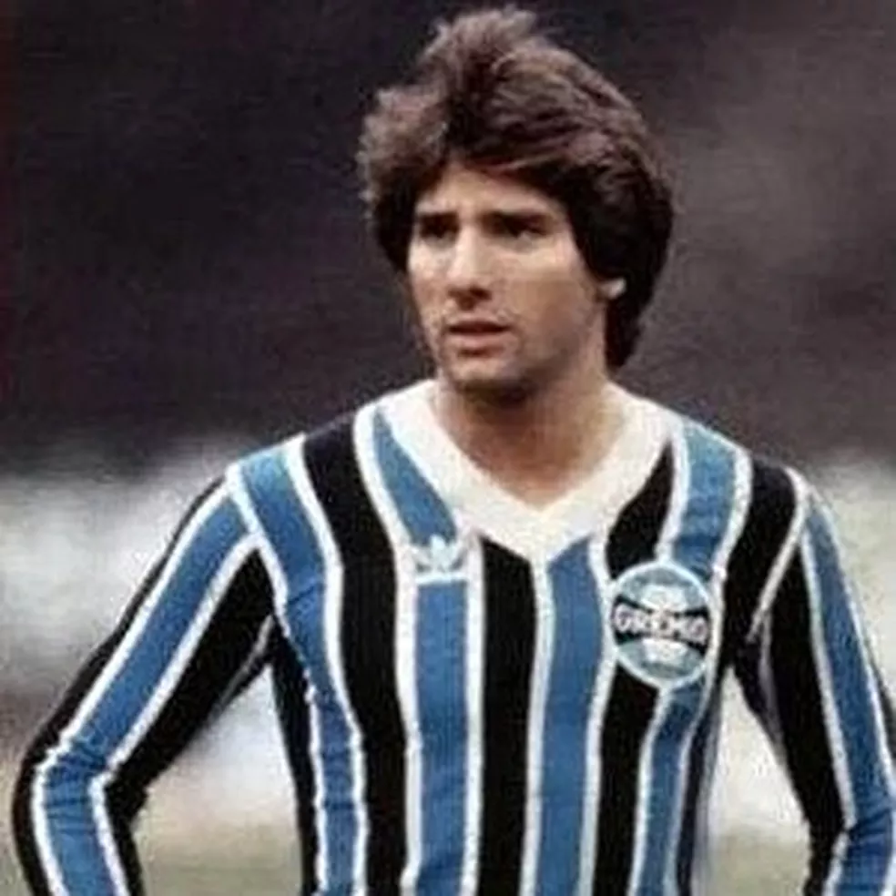
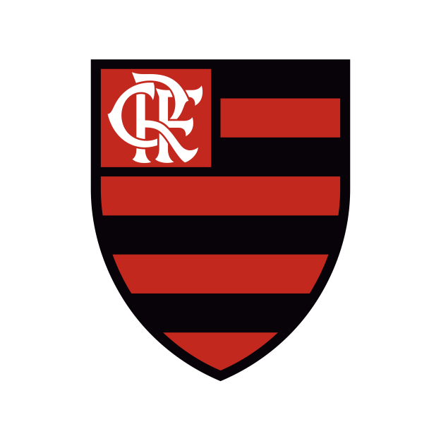
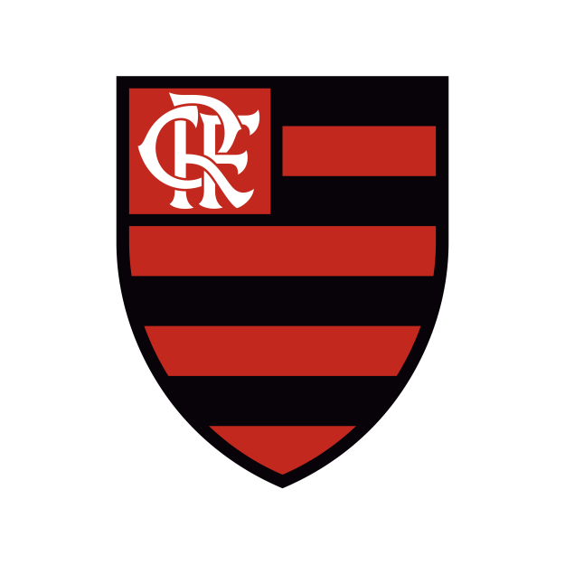
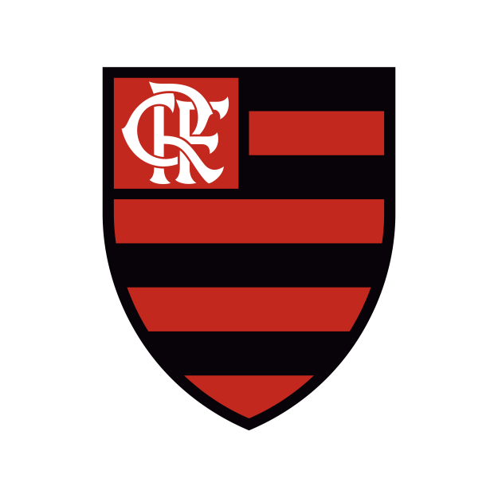

O Grêmio Foot-Ball Porto Alegrense, conhecido como Grêmio, é um clube de futebol brasileiro com sede em Porto Alegre, Rio Grande do Sul. Foi fundado em 15 de setembro de 1903 por imigrantes alemães. Ao longo de sua história, o Grêmio se consolidou como um dos maiores clubes do Brasil, com uma vasta coleção de títulos nacionais e internacionais.

Títulos
Campeonato Brasileiro: 2 títulos
Copa do Brasil: 5 títulos
Copa Libertadores da América: 3 títulos
Mundial de Clubes: 1 título

Estádio
O estádio do Grêmio é a Arena do Grêmio, inaugurada em 8 de dezembro de 2012. A Arena é um dos estádios mais modernos da América Latina e possui capacidade para mais de 55 mil torcedores, oferecendo uma experiência única aos fãs de futebol.

Jogadores Famosos
Ao longo dos anos, muitos jogadores talentoso vestiram a camisa do Grêmio. Entre eles estão Renato Portaluppi, Ronaldinho Gaúcho, Lucas Leiva, e muitos outros que deixaram sua marca na história do clube.

Outros Clubes

Para mais informações, visite o site oficial do Grêmio FBPA.
.png)
.png)
.png) 
